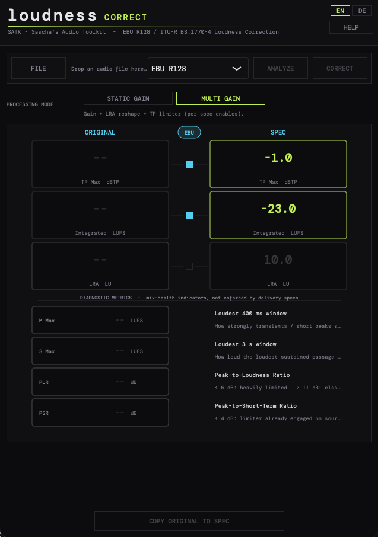

Batch-Normalisierung nach EBU R128 / ITU-R BS.1770-4. Hunderte Files auf einmal — gegated, true-peak-limited, in deinem Wunsch-Korridor. Mit CLI für Pipelines.

Drag-and-Drop oder Skript-Pipeline — der Normalizer arbeitet im Hintergrund weiter, während du am nächsten Beitrag sitzt.
Drop einen ganzen Ordner — der Normalizer queued auf, parallelisiert auf alle CPU-Kerne und schreibt in den Ziel-Ordner deiner Wahl.
Absolute -70 LUFS und relatives -10 LU Gating. 400-ms-Blocks mit 75% Overlap, Power-Domain-Berechnung — exakt nach Norm.
4-fach polyphaser True-Peak-Limiter mit 5-ms-Lookahead. -1 dBTP per Default — kein Inter-Sample-Clipping bei Codec-Konvertierung.
TV (-23), Streaming (-14), Podcast (-16), Spotify, Apple Music, YouTube, Amazon, Atmos. Plus Custom-Targets mit eigenem LRA-Reshape.
Aufruf aus Shell-Scripts, MAM-Workflows, Continuous-Delivery. Exit-Codes, JSON-Reports, Watch-Folder mit Inotify.
Stereo, 5.1, 7.1, ADM-BWF (Dolby Atmos). WAV, FLAC, MP3, AAC, OGG. Sample-Rate-Konvertierung optional integriert.
Egal ob ein File oder ein ganzer Sendetag — der Workflow bleibt der gleiche.
Einzelne Files, Ordner, ganze Trees. Stapel-Liste mit Datei-Info, geschätzter Loudness und Auffälligkeiten.
TV, Streaming, Podcast, Custom. LRA-Reshape und True-Peak-Ceiling justierbar pro Job.
Zwei-Pass-Verarbeitung: Analyse, Gain-Berechnung, Limiter-Run, Verify. Multi-Core, alle Sicherheitsnetze aktiv.
CSV mit allen Werten vorher/nachher, optional PDF-Sammelreport. JSON-Output für CI-Pipelines.
Saubere DSP, deterministisch, normgerecht.